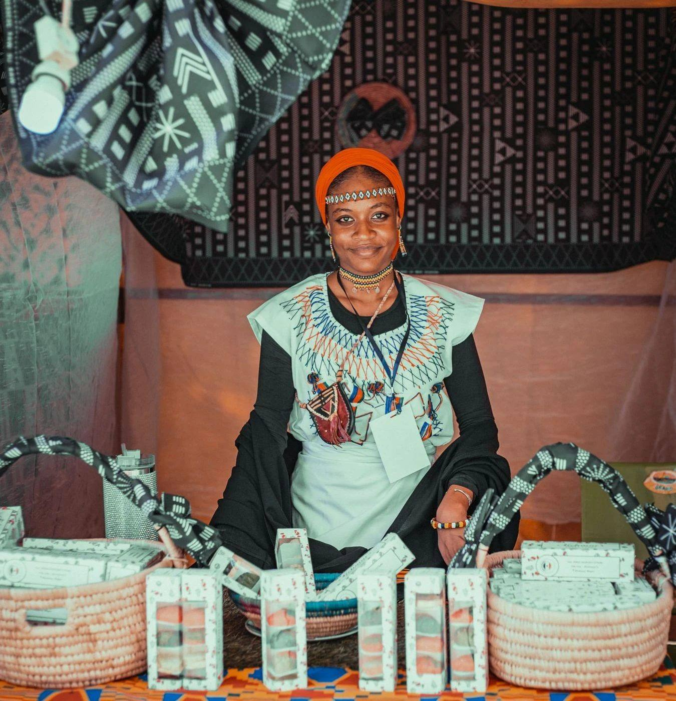

À propos de nous
Réseau des Caisses Mutuelles d'Épargne et de Crédit de Côte d'Ivoire
Le  RCMEC-CI est un réseau de microfinance qui compte à ce jour dix-huit caisses, situées en priorité dans les campagnes. Nous offrons des services financiers durables aux populations qui n'ont pas accès aux produits des banques classiques.
RCMEC-CI est un réseau de microfinance qui compte à ce jour dix-huit caisses, situées en priorité dans les campagnes. Nous offrons des services financiers durables aux populations qui n'ont pas accès aux produits des banques classiques.
Depuis 1995, nous accompagnons ces personnes en situation fragile dans la réalisation de leurs projets et le développement de leur environnement.

Le  RCMEC-CI en bref
RCMEC-CI en bref
- Dénomination
- Réseau des Caisses Mutuelles d'Épargne et de Crédit de Côte d'Ivoire (RCMEC-CI)
- Statut
- Réseau de microfinance, Système Financier Décentralisé (SFD) agréé en Côte d'Ivoire
- Catégorie
- Institution mutualiste d'épargne et de crédit, réseau qui regroupe les unions mutualistes
- Au service des populations
- Depuis 1995
- Autorisation d'exercer
- Arrêté n° 151 du 8 juin 1999 (immatriculation A-U-1.4.1/98-13)
- Réseau
- 18 caisses de base, dans plus de 10 régions de la Côte d'Ivoire
- Implantation
- Surtout dans les campagnes, mais aussi dans les petites villes et les villes
- Siège, Direction Générale
- Cocody II Plateaux, Carrefour Duncan, en face de l'ex-ADDR, Immeuble SICOGI, Bâtiment A, 3e étage, Abidjan
Source : Direction Générale du Trésor et de la Comptabilité Publique, liste des Systèmes Financiers Décentralisés agréés au 19 août 2024 ; site officiel du  RCMEC-CI.
RCMEC-CI.
Recevoir et gérer l'épargne de nos membres, accorder des crédits adaptés et peu coûteux à ceux qui en ont besoin, et protéger les populations contre les prêts à taux abusifs.
Aider les caisses du réseau à offrir des services financiers de qualité, accessibles à tous, en particulier aux habitants des campagnes, des petites villes et des villes, et à ceux qui travaillent à leur compte.
Une histoire au service des populations
- 1995
Début de l'accompagnement des populations qui n'ont pas accès aux produits des banques classiques.
- 8 juin 1999
Agrément comme Système Financier Décentralisé en Côte d'Ivoire, par arrêté n° 151.
- Aujourd'hui
18 caisses de base, dans plus de 10 régions de la Côte d'Ivoire, situées en priorité dans les campagnes.
Une caisse mutualiste appartient à ses membres. En achetant une part de son capital (les parts sociales), on devient membre et on peut recevoir une part des bénéfices.
Le  RCMEC-CI regroupe les caisses et les aide à offrir des services financiers de qualité, proches de leurs membres.
RCMEC-CI regroupe les caisses et les aide à offrir des services financiers de qualité, proches de leurs membres.
Un secteur encadré
Les Systèmes Financiers Décentralisés exercent dans un cadre réglementé. Le  RCMEC-CI est agréé en Côte d'Ivoire et figure sur la liste officielle des SFD agréés publiée par la Direction Générale du Trésor et de la Comptabilité Publique.
RCMEC-CI est agréé en Côte d'Ivoire et figure sur la liste officielle des SFD agréés publiée par la Direction Générale du Trésor et de la Comptabilité Publique.
Ce qui nous guide
- Solidarité
- Proximité
- Inclusion financière
- Autonomisation économique
- Confiance

Notre cible
- Personnes en situation fragile ou exclues des banques classiques
- Personnes qui travaillent dans les petits métiers et commerces non déclarés
- Agriculteurs
- Commerçants
- Artisans
- Entrepreneurs et PME
18 caisses de base, présentes dans plus de 10 régions de la Côte d'Ivoire
Les caisses présentes sur ce site se trouvent dans les régions suivantes :
- Vallée du Bandama
- Lagunes
- Agnéby
- Zanzan
- Sud-Comoé